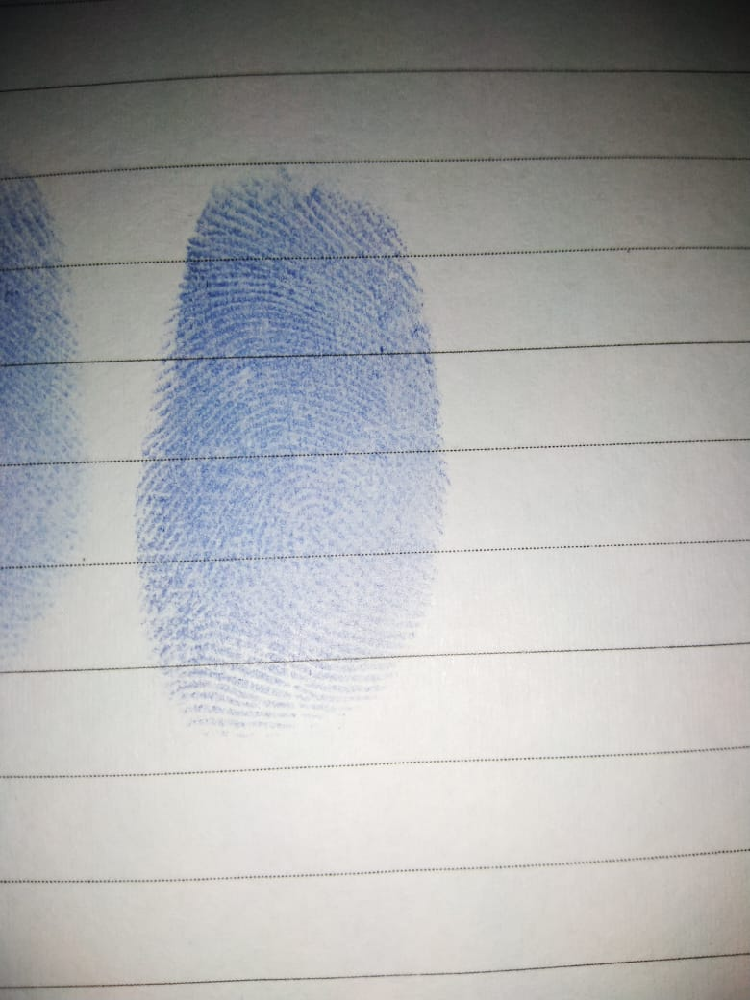
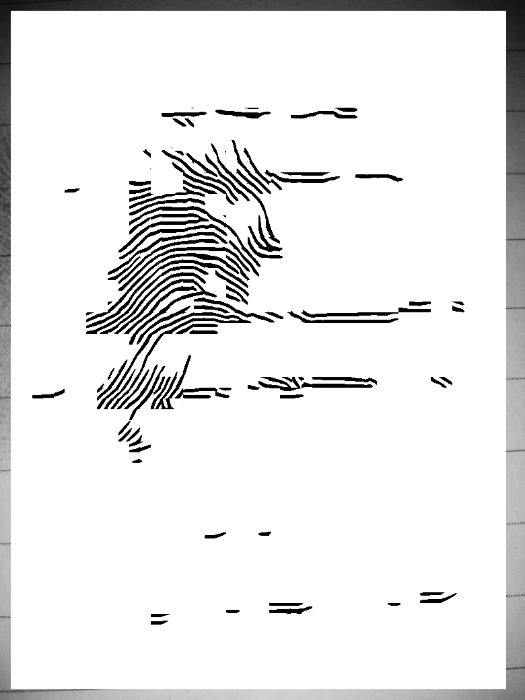
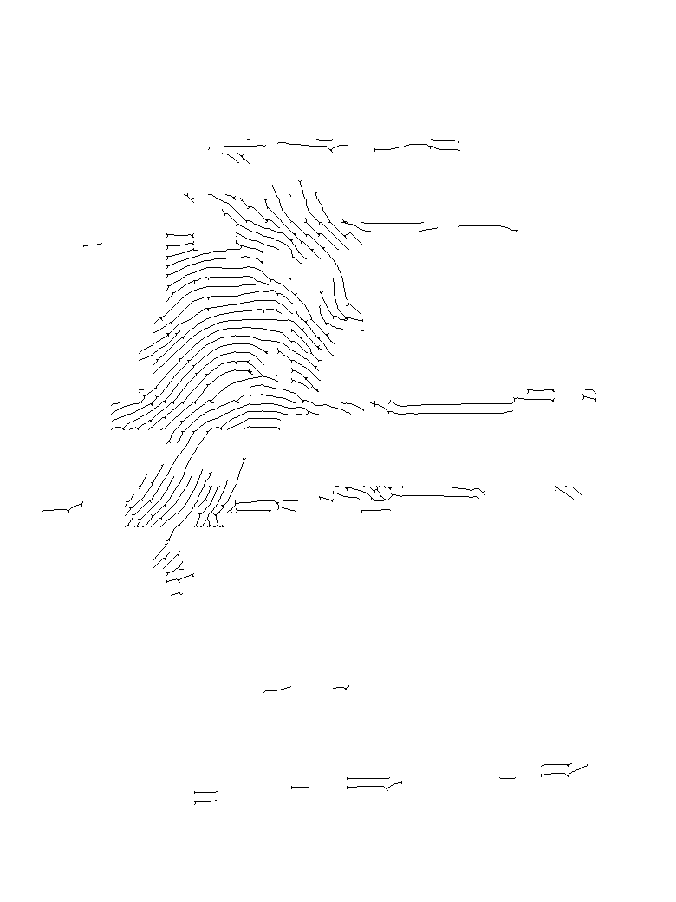
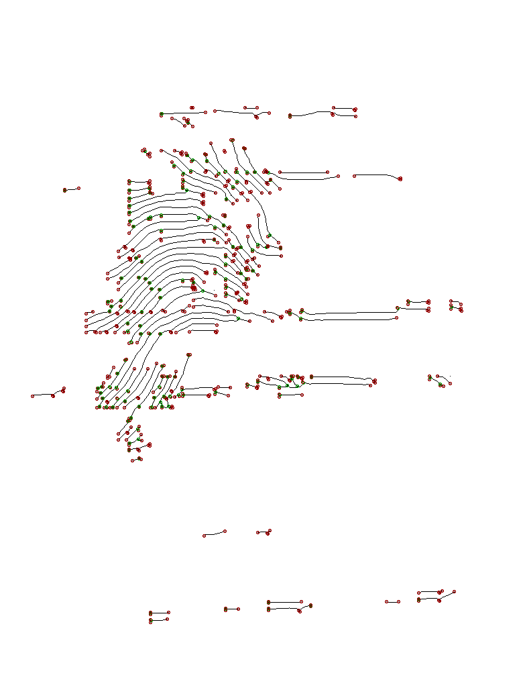

Fingerprint
Requirement :
Python 2.7
PIL library --pip install pillow
Fingerprint Module : github.com/L200160140/biometrics forked from github.com/L200160090/biometrics
Fingerprint image
Original
Gabor
Thinning
Minutiae




Original
python gabor.py finger.jpeg 16 --save
python thining.py finger_enhanced.gif --save
python crossing_number.py finger_enhanced_thinned.gif --save/td>